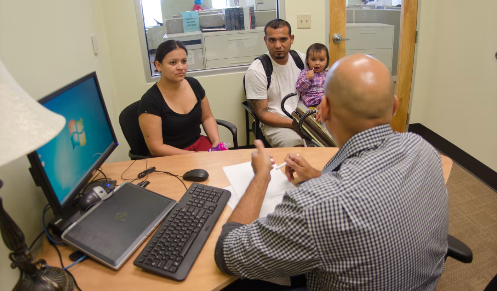

Research
My research examines the economic integration of immigrants and refugees in three areas: (a) employment, (b) immigration policy and the social safety net, and (c) digital inclusion in human services.

What Drives Refugees’ High Poverty in the Early Years after U.S. Resettlement?
Naseh, M., Lee, J. & Bechara, S. (2026). Migration Policy Institute.
Read moreForced Migration Initiative (Research Assistant, 2023–present)
The Forced Migration Initiative at Washington University in St. Louis leads research, education, and training to improve the quality of life and well-being of people who have experienced forced migration. Projects include multidimensional economic integration of newly resettled Afghans (Russell Sage Foundation), restrictive migration policies and the well-being of highly educated immigrants, and ethnic networks and health disparities among Afghan refugees.
Read more